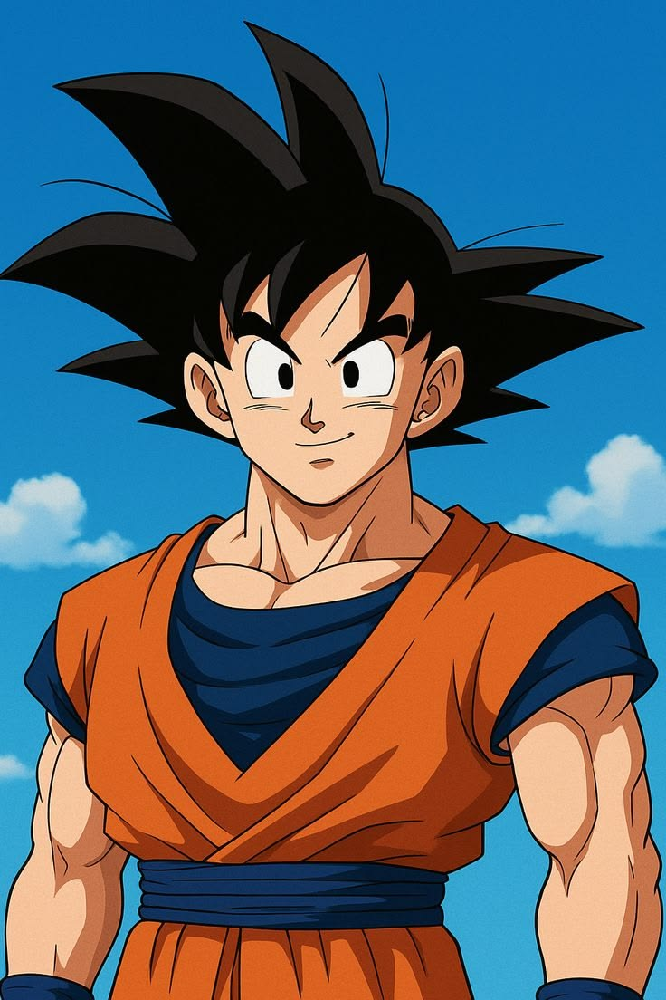

Diretamente do Planeta Vegeta, ele é o guerreiro mais forte do universo! Nascido como Kakaroto, ele foi enviado à Terra ainda bebê antes do seu mundo ser destruído. Após um acidente que o fez esquecer sua missão de destruição e bater a cabeça, ele cresceu com um coração puro, tornando-se o nosso maior defensor. Com vocês: Son Goku
| Força: 200OK | Inteligencia: Muita mano | Velocidade: Rapidão |